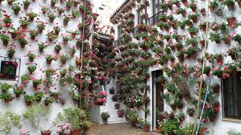

PATIOS DE CÓRDOBA

El patio cordobés es un elemento característico de la ciudad andaluza de Córdoba, España, y desde los años 1930 se magnifican con el famoso Festival de los Patios Cordobeses, declarado en 2012 Patrimonio de la Humanidad, cuya visita turística hacen que esta fama crezca en el exterior. En el interior no cabe pensar en una casa que no tenga un patio; lo demás son pisos o chalets. La colección de patios, desde el patio de la Mezquita-Catedral hasta patios minúsculos, es tan amplia que dificulta su catalogación. Los límites los marcan las designaciones de corral, "patinete" o patio de luces, huerto, parque o jardín.1